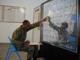

After independence only two Anti Aircrafts came into share of Pakistan.Merged with Pakistan Artillery, these units were renamed as 5 Heavy Anti Aircraft and 6 Light Anti Aircraft Regiments. 5 Heavy Anti Aircraft Regiment was the most technical and sophisticated unit of its time. It was the HIMAD Regiment of its time having 3.7” Radar Controlled Guns with a covering range upto 18 kms. It was capable of acquiring, tracking, computing and destroying all weather air intrusions at twenty two thousand feet automatically. Since PAF had yet to be created, the base of Air Defence in Pakistan was laid by 5 Heavy Anti Aircraft Regiment. The unit, therefore, was naturally selected by the Father of Nation, Quaid-e-Azam Muhammad Ali Jinnah for the unique honour of being the First unit of the Armed Forces of Pakistan to be inspected by him on 21 February 1948.
Limited inductions of improved short range air defence weapons resulted in a commendable anti air craft performance in the 1971 war. Anti Aircraft was then accredited with 51 aircraft, 23 alone were shot down at Dacca Air Field by 6 Light Anti Aircraft Regiment, now 6 Light Air Defence Regiment. At the outbreak of hostilities the Anti Aircraft Arty was organized as one Army Air Defence Brigade (i.e. 3 Army Air Defence Brigade) having 12x Light Anti Aircraft Regiments, 2x (SP) Light Anti Aircraft Regiments, 3x Heavy Anti Aircraft Regiments, and 2x Independent Light Anti Aircraft Batteries. Out of these, 1x Light Anti Aircraft Regiment was deployed in East Pakistan. The worth mentioning performance was of 6 Light Anti Aircraft Regiment deployed in East Pakistan (Dacca) under the Command of Brigadier (the then Lieutenant Colonel) Muhammad Afzal, SJ (Late). The unit destroyed 23x air crafts and was awarded 4x SJs. “Miss Holingworth” a BBC War Correspondent described the performance of 6 Light Anti Aircraft Regiment as “It has been my great desire to see aircraft shot down by Anti Aircraft guns. Today when I am watching the duels between Indian pilots and Pakistani gunners, I can see the air crafts falling like toys. This is a world record for an Anti Aircraft performance.
Anti Aircraft growth in Pakistan was relegated for the development of PAF and Artillery. Its need and importance in Air Defence was, however, highlighted by the Kashmir conflict in 1948, which resulted in some raisings. In the 1965 war even with favourable air situation, the importance and shortage of ground based Air Defence weapons were clearly brought out. Anti Aircraft was accredited with shooting down 49 enemy aircrafts in 1965.
The 1971 War highlighted again the imbalance in the organization and development of Anti Aircraft. Anti Aircraft Command Headquarters was raised in 1975 to coordinate operational employment of all Anti Aircraft units in Pakistan. Anti Aircraft after 28 years of its existence was now to be coordinated operationally by Anti Aircraft Officers. The First General Officer Commanding Major General Iftikhar Muhammad brought in systematic and professional development of Anti Aircraft by developing a concept of surveillance and inducting the First Air Defence System after 1947 i.e radar controlled 57 mm Medium Anti Aircraft. It was a great contribution in environment of economic stringency. Being, then, a part of the Artillery, Anti Aircraft needs and priorities were neither comprehended nor given due weightage. Anti Aircraft development was relegated to a low key in the days of Martial Law.
It was only in 1984 when the first comprehensive five year development plan aiming at total development of Anti Aircraft was conceived, approved and implemented on the orders of General Khalid Mahmud Arif. This comprehensive plan envisaged Modernization, Modification, Reorganization and Indigenization.
Its concept of employment was tested and validated in Exercise Zarb-e-Momin. Army Air Defence as an operational and economical necessity had to be organized on a centralized command basis. This concept was approved for implementation in February 1991.
This period spreading over a decade could be regarded as "Consolidation Phase" of Army Air Defence. The newly inducted equipment, weapons and technologies, in the shape of LAADS (Low Altitude Air Defence System) radars, RBS- 70 Missiles, Giraffe Radars, 35 mm Oerlikon Gun system along with Sky Guard Radars were absorbed; both at technical and tactical levels. This phase also saw increase in Air Defence formations and units. The employment concept and tactical doctrine were put to test and adopted subsequently. Army Air Defence was raised on 23 March 1989, when it was separated from Artillerynd recognized as the youngest Arm of Pakistan Army, given the name 'Army Air Defence'. This was officially proclaimed on 10 October 1989. Army Air Defence successfully faced the challenge by reorganizing in harmony with its Concept of Integrated Air Defence.
As Army Air Defence is a dynamic arm and it has to keep pace with the fast changing technology and ever increasing/changing air threat. Therefore, a "New Air Defence Concept" based on re-organization of Air Defence Units, selective modernizations and induction of new weapons and equipment was evolved. The same was presented at various forums and modified in the light of recommendations by various headquarters/ organization. As a result of extensive mutual discussions, exhaustive staff work followed by field trails of proposed organizations, the same was approved in October 2003.
More-so, the time fuze of Heavy Anti Aircraft guns brought a total surprise to Indians. In Pandu and Chota Kazi Nag Sector, four Anti Aircraft guns were deployed besides Medium and field artillery. In Uri and Akhnur Sectors, 2 x Heavy Anti Aircraft guns and 4 x Light Anti Aircraft guns participated in Artillery duels. Despite lack of tracks, Captain Abid Hussain Shah (later Major Abid Hussain took the guns to a position in Babot and positioned them on 5 December 1948, which surprised every one. Even General Tottenham, the General Officer Commanding had to call Captain Abid and congratulate him for a job which was almost impossible. Besides use in ground role, these guns never allowed the Indian Reconnaissance planes to enter the area and take photographs. The performance of Anti Aircraft gunners, though negligible; had been commendable from all angles.
The Indian Summer Offensive in Jhelum valley started in May 1948. Besides Field Artillery to support the ground offensive of our infantry, the 3.7 inch Heavy Anti Aircraft guns ex 5 Heavy Anti Aircraft Regiment and 40 mm Anti Aircraft guns of 6 Light Anti Aircraft Regiment were also employed/deployed in ground role to augment the fire power of field Artillery. It may be mentioned that at various places these Anti Aircraft guns proved more effective (basing direct firing weapons).
29 Light Anti-Aircraft Regiment was similarly scattered:-
In August, 110 and 111 batteries moved to Chamb and came under command 4 Corps Artillery. On 6 September 111 Battery moved to Sialkot with 4 Corps Artillery. 110 Battery remained with 7 Division. On 10 September 109 Battery moved from Jhelum bridge and joined 11 Division.
19 Light Anti-Aircraft Regiment, a unit organic to 1 Armoured Division sent three batteries to Sialkot to join 4 Corps Artillery, which now had two batteries from two different units, 49 (SP) and 135 batteries were deployed to protect bridges on BRB and Ruhi nullah, road Kasur-Khem Karn.
Light Anti-Aircraft Regiment and 20 Light Anti- Aircraft Regiment were the only anti-aircraft units employed as such, the former at Mauripur and the later at Sargodha air base. 13 Light Anti- Aircraft Regiment was deployed as follows:-
5 Light Anti-Aircraft Regiment sent 18 Battery to Badin and 12 Battery to Korangi Creek.
On 6 September 33 Battery, 36 Light Anti-Aircraft Regiment, moved from Kala to Sargodha air base and came under command 20 Light Anti-Aircraft Regiment. Sargodha now had five batteries from three different regiments. On 12 September 135 Battery was moved from Jhelum bridge and joined II Division Artillery, which formation now had four batteries from three different regiments. On 13 September 132 Battery moved from Ravi bridge to north Syphon. Admittedly, some grouping was necessitated by deficiency of anti-aircraft units and some of the moves were dictated by tactical compulsions. Nevertheless the complete hodge-podge obtained by 13 September may be attributed only to lack of foresight.
Despite the disruption of command structure the performance of anti- aircraft units was commendable. In face of our anti-aircraft artillery, Indian aircraft seldom pressed home their attacks with any degree of precision. Approximately thirty aircraft were shot down during the period of fighting. In terms of cost effectiveness our anti-aircraft artillery units had more than earned their keep.
Anti-Aircraft units by virtue of their role may operate, if necessary as sub-units, as well. However, there is no justification for their commitment in complete disregard of command structure. The intimacy of leadership is an element of strength in the operational performance of any military organisation. To eliminate this element is to deprive the unit of that much strength. In 1965 war anti- aircraft units were indeed scattered with almost lunatic abandon.
Guns That Played Havoc With IAF During 1971 War 37 MM AA Gun.
In 1971 anti-aircraft artillery resources consisted of the following :-
Anti-Aircraft resources were inadequate for the number of installations whose security was necessary to the successful prosecution of war. The air installations, quite rightly, received the highest priority. Next came Naval dockyards and some important bridges. The oil installations and railway remained largely unprotected. Some were given Mujahid sub- units, whose equipment was defective and whose personnel were mildewed ex-servicemen. From 4 December onwards Indian air attacks were focused on railway engines and oil installations. The anti-aircraft units had mixture of British, American and Chinese equipment.
(Officers, Junior Commissioned Officers & Soldiers ex Army Air Defence).